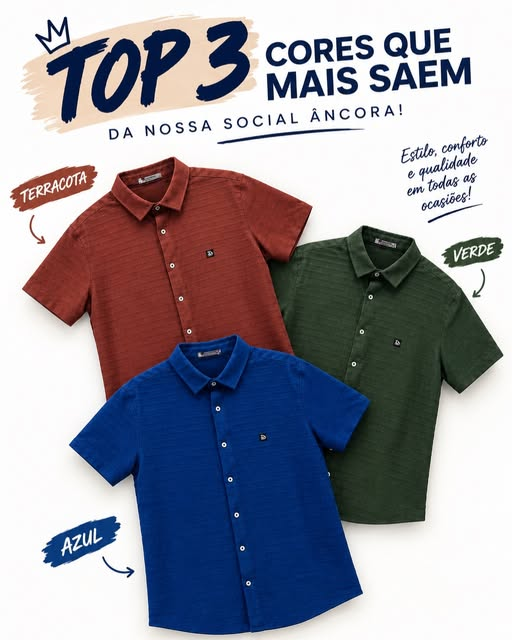
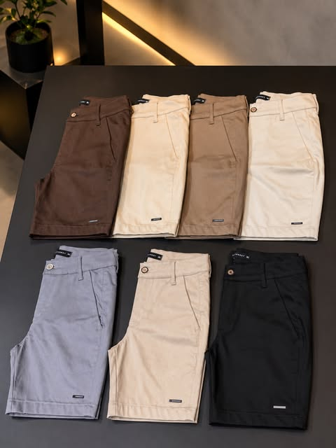

CAMISETAS
Conforto para todos os dias
Catálogo Aeroboy
Escolha o look. Vista a atitude.
Explore nossas linhas e fale com a equipe para confirmar cores, tamanhos, valores e disponibilidade.
Ver produtos

Encontre seu estilo
As imagens representam produtos e linhas divulgados pela Aeroboy. Estoque, cores e condições devem ser confirmados no atendimento.
Conforto para todos os dias
Presença do trabalho ao encontro

BERMUDASVersatilidade sem esforço
ESSENCIAISConforto começa por dentro
Atendimento Aeroboy
Escolha uma unidade e confirme opções disponíveis, tamanhos, atacado ou varejo.
Escolher canal de atendimento